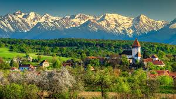
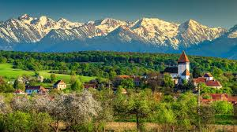

Hobbies and interests
Sports
The list of sports that I have played are endless, from winning an all Ireland rowing medal to playing american football and being asked to tryout for the irish team, my time in sport has been a colourful one to say the least.
There is never a dull moment when playing a sport you love, from the comradery to the harshness of training, I loved it all.
the training for all sports provided me with an appreciation for each skillset learned and thought me discipline and mental resiliance.
The thrill of going up against an opponent, to fight for every yard on the pitch and to leave a match knowing you gave it your all, that is what it is all about.
Travelling with family
Travel is something that has peaked my interest from a very young age, with plans to travel the world with my girlfriend lined up over the coming years.
From the shores of France, to vineyards in Spain, the list of places I have been fortunate enough to explore is nothing short of spectacular.
Take the Loire valley for example,The pomp and prestige of royalty and artistry poke through the patches of forest, dominate small towns and stand preserved within manicured gardens.
Majestic châteaux akin to a grand castle or simply a turret clad stately family home.
These are places where kings and lords once resided and ran the villages and towns you lightly pedal through, or where artists, like Leonardo Da Vinci, came to showcase their work as special guests of the Monarchs.
Then we have my country of birth, the scenic Romania. With its lush landscapes and picturesque villages, it truly is a place of beauty.
Romanian castles can be found in abundance, but Bran Castle in Transylvania is one of Romania's best-known landmarks a 14th-century fortress sitting atop a hillside in the Carpathian Mountains.
The monument became home to the world's most notorious vampire, Count Dracula, made famous by Bram Stoker's 1987 novel about the curse of the undead.
Count Dracula is based on Vlad "The Impaler Tepes" who was allegedly imprisoned here for a few months.
Finance
From a young age I have always been fascinated by the stock market, peronsally for me if there was a way to go straight from school into finance I would have taken it
The whole idea of finance to me is like a game of chess, pitting your knowledge against someone elses in the hope of astronomical returns.
I have studied the subject rigourously over the last few years and hope to someday run my own fund.
Travel with my girlfriend
having not travelled too much during my earlier years, I now have a hunger for seeing the world and to do it all with my girlfriend
There is something about being able to experience different cultures, see what the world has to offer and to be able to tell people about your travels that really entices me.
So hopefully before I must settle down with work or that my business takes off and I earn enough to go travelling with my soulmate, there is a need inside me to see everything and experience everything.